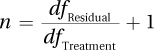
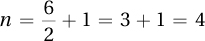
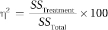
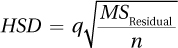
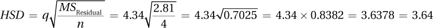
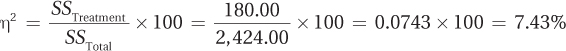
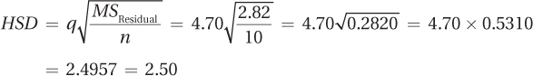
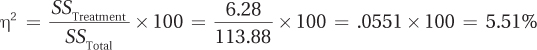
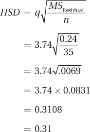

396
Statistical tests are used to help answer questions and make decisions. It is in the sixth step of hypothesis testing, the interpretation of results, that clear language is used to tell what was found and what it means. In the ADHD/level of distraction study, for example, repeated-measures ANOVA is being used to determine if treatment decreases the level of distraction and if the improvement is maintained when treatment stops.
For a one-way, repeated-measures ANOVA, just as with a between-subjects, one-way ANOVA, there are three tasks involved in interpretation:
Determine whether the null hypothesis is rejected.
Determine how big the overall effect is. That is, how much of the variability in the dependent variable is explained by the independent variable.
Determine where the effect is found. All a statistically significant ANOVA reveals is that at least one sample mean differs statistically from at least one other sample mean. Post-hoc tests are needed to find out which pair(s) of means differ and what the direction of the difference is.
Step 6 Interpret the Results
As with previous tests, a researcher determines if the null hypothesis was rejected by checking the decision rule generated in Step 4 against the value of the test statistic calculated in Step 5. For the ADHD/level of distraction data, Fcv = 5.143 and F = 18.72. (The F value can be found in the ANOVA summary table, Table 11.3. There will be several other values in the ANOVA summary table needed for interpretation, so it is reprinted here as Table 11.5.)
In Step 4, the decision rule Dr. King generated was:
If F ≥ 5.143, reject H0.
If F < 5.143, fail to reject H0.
397
Because 18.72 ≥ 5.143, the first statement is true and Dr. King rejects the null hypothesis. Figure 11.7 shows that the F ratio fell in the rare zone. This means that the results are called statistically significant and the alternative hypothesis is accepted. The psychologist can conclude that at least one of the population means—either the pre-treatment level of distraction, or the post-treatment level of distraction, or the six-month follow-up level of distraction—probably differs from at least one other population mean. It isn’t possible yet to talk about the direction of the difference because which pair(s) differs is still unknown. Discussing the direction of the difference needs to wait until post-hoc tests have been completed.
To report the analysis of variance results in APA format, Dr. King would write F (2, 6) = 18.72, p < .05. This gives five pieces of information:
What test was done (an F test).
The degrees of freedom for the numerator (dfTreatment = 2) and the denominator (dfResidual = 6) of the F ratio. From these, it is possible to figure out n, how many cases there are in each group by using this equation: . For the ADHD study, this would be .
The observed value of the test statistic (18.72).
What alpha level was used (.05). (This indicates how likely a Type I error is.)
Whether the null hypothesis was rejected (p < .05) or not (p > .05).
The next step in interpretation involves how big the effect is. This should be calculated whether or not the null hypothesis is rejected.
If the null hypothesis is rejected, the researcher needs to calculate the size of the effect to quantify how much impact the independent variable has on the dependent variable. In the ADHD/level of distraction example, the question is to what degree time/treatment affects the level of distraction.
If the null hypothesis is not rejected, it is still important to calculate the effect size. If the effect of the independent variable on the dependent variable is more than small, that alerts the researcher to the possibility of a Type II error. He or she will likely end up suggesting a replication with a larger sample size.
398
Whereas r2 was used to quantify the size of the treatment effect for a between- subjects, one-way ANOVA, we will use eta squared(η2) for a one-way, repeated- measures ANOVA. The formula is given in Equation 11.2.

where η2 = eta squared for the treatment effect, the percentage of variability in the dependent variable that is explained by the explanatory (treatment) variable
SSTreatment = sum of squares treatment from the ANOVA summary table
SSTotal = sum of squares total from the ANOVA summary table
For the ADHD data, where it is known that SSTreatment = 105.17 and SSTotal = 430.67 (see Table 11.5), Dr. King calculated η2 this way:
Eta squared for the treatment effect in the level of distraction data is 24.42%. Eta squared tells the percentage of the variability in the dependent variable that is accounted for by the explanatory variable. It can range from 0% (meaning the explanatory variable has no impact on the dependent variable) to 100% (meaning the explanatory variable wholly determines the dependent variable).
For the ADHD/level of distraction data, eta squared shows how well the explanatory variable of treatment status—pre-treatment, post-treatment, or follow-up—predicts outcome as measured by the dependent variable of level of distractibility. If η2 = 0%, then knowing the treatment status doesn’t provide any information about a child’s level of distraction. If η2 = 100%, then knowing the treatment status precisely predicts a child’s level of distraction.
Explaining 100% of the variability never happens and it is all too common to explain only a small percentage of the variability. As a guide to interpreting eta squared, use Cohen’s guidelines for r2:
η2 ≈ 1% is a small effect.
η2 ≈ 9% is a medium effect.
η2 ≈ 25% is a large effect.
Figure 11.8 shows graphically what small, medium, and large effect sizes look like and how much variability they leave unexplained.
As η2 = 24.42% in the ADHD study, Dr. King can conclude that treatment status has a large effect on the level of distraction. It is now time to find out specifically which group—pre-treatment, post-treatment, or follow-up—has the effect.
399
Once again, the Tukey HSD will be used as the post-hoc test. HSD stands for “honestly significant difference” and any two sample means that differ by at least the HSD value represent two populations that are honestly likely to have different means. The formula for the HSD value is given in Equation 11.3. Please remember, post-hoc tests are only performed when the results of the ANOVA are statistically significant!

where HSD = HSD value being calculated
q = q value from Appendix Table 5, where k = the number of groups and df = dfResidual
MSResidual = mean square residual, from the ANOVA summary table
n = number of cases per group
Dr. King needs three values in order to apply Equation 11.3: q, MSResidual, and n.
To find the q value, Dr. King uses Appendix Table 5. k = 3 as there are three groups in the ADHD study, so he looks in that column. The row is based on the residual degrees of freedom, which are 6 for the ADHD data. At the intersection of the column for k = 3 and the row for df = 6, he finds the q value, q = 4.34.
In the ANOVA summary table (Table 11.3 and Table 11.5), he finds MSResidual = 2.81.
There are four cases in each group, so n = 4.
400
Given those three values, here are Dr. King’s calculations to find the HSD value using Equation 11.3:

The Tukey HSD value is 3.64. Any pair of sample means for the ADHD/level of distraction study that differs by this much or more has a statistically significant difference. It doesn’t matter which mean is subtracted from which in order to compare the difference to the HSD value, so Dr. King has arranged the comparisons to give positive numbers. The post-hoc test results are summarized in Table 11.6 and explained in detail below.
Pre-treatment mean level of distraction vs. post-treatment mean level of distraction:
22.25 − 15.00 = 7.25.
7.25 ≥ 3.64, so Dr. King concludes that there is a statistically significant difference between the level of distraction from pre-treatment to post-treatment.
The sample means can be used to comment on the direction of the difference: the reduction in level of distraction from pre-treatment to post-treatment is a statistically significant one. Phrased simply: treatment works.
Pre-treatment mean level of distraction vs. six-month follow-up mean level of distraction:
22.25 − 18.75 = 3.50.
3.50 < 3.64, so this difference is not statistically significant. For this population of children with ADHD, there’s not enough evidence to conclude that any difference exists in the level of distraction between the start of treatment and six months after treatment. Phrased simply: there’s not enough evidence to show that treatment has a long-term impact.
However, be aware of two things: (1) the difference was close to being statistically significant, and (2) the sample size was small. These values alert Dr. King to the risk of making a Type II error, so he’s going to end up recommending replication with a larger sample size.
Post-treatment mean level of distraction vs. six-month follow-up mean level of distraction:
18.75 − 15.00 = 3.75.
3.75 ≥ 3.64, so this difference is statistically significant. For this population of children with ADHD, one can conclude that the level of distraction is statistically significantly higher six months after treatment than it is at the end of treatment. Phrased simply: some relapse seems to occur when treatment is over.
401
Here is Dr. King’s four-point interpretation in which he (1) states what was done, (2) presents the main findings, (3) explains the results, and (4) makes suggestions for future research:
This study was conducted to evaluate the long-term effectiveness of individual behavior therapy in treating children with ADHD. Four children with ADHD had their levels of distraction assessed before treatment started (M = 22.25), at the end of treatment (M = 15.00), and again six months later (M = 18.75). Using a one-way, repeated-measures ANOVA, there was a large and statistically significant effect on distractibility as a function of when the outcome was assessed [F(2, 6) = 18.72, p < .01]. Post-hoc tests showed that the mean level of distraction significantly improved from pre-treatment to the end of treatment. Unfortunately, a statistically significant amount of relapse occurred over the next six months, with the mean distractibility level getting worse from the end of treatment to the six-month follow-up. The change in the mean level of distraction from pre-treatment to six-month follow-up was not statistically significant, meaning there was insufficient evidence to show that ADHD symptoms were any better six months after treatment than they were before treatment started. Individual behavior therapy appears effective in treating ADHD, but the results don’t remain fully in effect for six months when treatment is over. However, the present study only had four participants and it is possible that the small sample size prevented some effects from being found. To get a better sense of the long-term impact of individual behavior therapy on distractibility, the study should be replicated with a larger sample size.
For practice interpreting a one-way, repeated-measures ANOVA, let’s use the results from the back pain surgery study. In that study, Dr. Agosto, an orthopedic surgeon, took 30 people with chronic back pain and divided them into groups of three that were matched on age, sex, years of pain, and degree of impairment. One of the three people in each group was randomly assigned to receive real surgery, one sham surgery, and one no surgery. Each participant then received physical therapy for six months, at which point his or her quality of life was measured (with higher scores indicating better functioning). The mean was 51.00 for the 10 surgery patients, 48.00 for the sham surgery patients, and 45.00 for the physical therapy only patients. Fcv was 3.555 and the ANOVA summary table for the one-way, repeated-measures ANOVA is presented here again as Table 11.7.
402
Was the Null Hypothesis Rejected?
The decision rule was:
If F ≥ 3.555, reject H0.
If F < 3.555, fail to reject H0.
The observed value of F (see Table 11.5) is 31.91, which is greater than 3.555. Figure 11.9 shows how the F value landed in the rare zone of the sampling distribution. As a result, the null hypothesis is rejected, the alternative hypothesis is accepted, and the results are called statistically significant. This means it is concluded that at least one of these three treatments is different from at least one other for this population of patients with back pain. In APA format, the results are written F(2, 18) = 31.91, p < .05.
Repeated-measures tests are more powerful than between-subjects tests.
The three means (51.00, 48.00, and 45.00) all seemed close to one another and Dr. Agosto had speculated that the ANOVA would not be statistically significant. The fact that the results are statistically significant shows the power of a repeated-measures design. By isolating the variability due to treatment from variability due to individual differences, it is easier to reject the null hypothesis with a repeated-measures design. If one had, erroneously, used a one-way, between-subjects ANOVA to analyze the ADHD data, the results would not have been statistically significant. Repeated-measures tests are more powerful than between-subjects tests.
How Big Is the Effect?
To determine effect size, η2, Dr. Agosto used Equation 11.2. Eta squared quantifies the percentage of variability in quality of life (the dependent variable) that is accounted for by which treatment cases receive (the independent variable.) To calculate eta squared, a researcher needs to know sum of squares treatment and sum of squares total. Looking in Table 11.7, Dr. Agosto finds SSTreatment =180.00 and SSTotal = 2,424.00. Substituting those into Equation 11.2 gives

An η2 of 7.43% qualifies as a medium effect.
Where Are the Effects and What Is Their Direction?
The ANOVA was statistically significant, so Dr. Agosto will need post-hoc tests to pinpoint where the effect occurred. To use Equation 11.3 to calculate the Tukey HSD, she will need to know q, MSResidual, and n.
403
With k = 3 and dfResidual =18, q = 4.70. (Note: Dr. Agosto had set alpha at .01 for the repeated-measures ANOVA to reduce the risk of Type I error. To be consistent, she is using the Appendix 5 q table with α = .01.)
MSResidual = 2.82.
n = 10.
Now she can calculate Tukey HSD using Equation 11.3:

Dr. Agosto has three comparisons to make. Any pairs of means that differ by at least 2.50 points have a statistically significant difference.
Group 1 vs. Group 2: Real surgery plus physical therapy vs. sham surgery plus physical therapy.
51.00 − 48.00 = 3.00.
3.00 ≥ 2.50, so the difference is statistically significant. For this population of people with back pain, Dr. Agosto can conclude that people who receive real surgery have a statistically better outcome, in terms of quality of life, than do people who receive sham surgery.
Group 1 vs. Group 3: Real surgery plus physical therapy vs. physical therapy alone.
51.00 − 45.00 = 6.00.
6.00 ≥ 2.50, so the difference is statistically significant. For this population of people with back pain, Dr. Agosto can conclude that people who receive real surgery and physical therapy have a statistically better outcome, in terms of quality of life, than do people who receive physical therapy alone.
Group 2 vs. Group 3: Sham surgery plus physical therapy vs. physical therapy alone.
48.00 − 45.00 = 3.00.
3.00 ≥ 2.50, so the difference is statistically significant. For this population of people with back pain, Dr. Agosto can conclude that people who receive sham surgery plus physical therapy have a statistically better outcome, in terms of quality of life, than do people who receive physical therapy alone.
There’s a lot here to keep track of, so Dr. Agosto uses inequality signs to keep the effects straight: Real surgery > Sham surgery > Physical therapy.
Putting It All Together
Here is Dr. Agosto’s four-point interpretation:
I conducted a study investigating how effective surgery is as a treatment for chronic back pain. Thirty people with chronic back pain were matched into groups of three on the basis of age, sex, length of illness, and severity of illness. One member of each group was randomly assigned to receive real surgery, one to receive sham surgery, and one to receive no surgery. Each participant then received six months of physical therapy. Using a one-way, repeated-measures ANOVA, there was a small to modest, statistically significant effect for type of treatment on quality of life [F(2, 18) = 31.91, p < .05]. People receiving real surgery had a statistically higher quality of life (M = 51.00) than people receiving sham surgery (M = 48.00), and people receiving sham surgery had a statistically better quality of life than people just receiving physical therapy (M = 45.00). These results show that though there is a placebo effect for having surgery for back pain, there is a benefit to receiving surgery that is above and beyond the placebo effect. Future research should investigate which types of back problems are helped by which type of treatment.
404
Apply Your Knowledge
11.10 Given Fcv = 2.866, dfTreatment = 3, dfResidual = 36, F = 4.36, and α = .05, (a) write the results in APA format. (b) Are the results statistically significant?
11.11 Given SSTreatment = 35.76 and SSTotal = 124.64, (a) calculate η2. (b) Is this considered a small, medium, or large effect?
11.12 Given k = 5, n = 16, MSResidual = 12.98, and α .05, (a) find q and (b) calculate Tukey’s HSD.
11.13 A software designer was curious as to how comfort with technology varied across generations. He obtained 10 families and brought in a teenager, a parent, and a grandparent from each family. Then he had each of them, individually, install a new piece of software. For each one, he timed how long it took to click on the “Agree to Terms of Installation” button. The mean time for the teens was 1.50 seconds, for the parents 4.50 seconds, and for the grandparents 20.00 seconds. No assumptions were violated and he conducted a one-way, repeated-measures ANOVA with α = .05. He calculated η2 = 94.53% and HSD = 2.42. Below is the one-way, repeated-measures ANOVA summary table. Write a four-point interpretation for the results.
| Source of Variability | Sum of Squares | Degrees of Freedom | Mean Square | F ratio |
| Subjects | 33.03 | 9 | ||
| Treatment | 1,971.67 | 2 | 985.84 | 219.08 |
| Residual | 81.05 | 18 | 4.50 | |
| Total | 2,085.75 | 29 |
In the most famous example of classical conditioning, a conditioned stimulus (a bell) was repeatedly paired with an unconditioned stimulus (meat) until a dog learned to salivate to the sound of the bell. Salivation to the bell is called a conditioned response. The process of then teaching the dog not to salivate to the bell is called extinction. In extinction, the dog hears the bell but doesn’t see the meat and eventually the bell no longer elicits salivation. If a researcher then waits a few days after extinction has occurred and rings the bell around the dog again, the dog will salivate to the sound of the bell again. This is called spontaneous recovery.
Let’s imagine a researcher who wanted to see if extinction and spontaneous recovery occurred in humans with naturally occurring classical conditioning. That is, he wanted to see if these phenomena occurred when the conditioned response hadn’t been taught in a laboratory, but had naturally developed.
405
Dr. Brian had noticed that many people salivate when they see a lemon, so he decided to use this conditioned reaction. (Try this thought experiment: Think of someone cutting open a juicy yellow lemon, right in front of you. You watch as she takes a slice of lemon, bites into it, and grimaces a little at the sourness of it. Just thinking of this, do you feel salivation happening in your mouth? That’s a conditioned response.)
Dr. Brian brought 35 participants from the experiment participation pool into his lab, one at a time, and measured how many grams of saliva each one produced in 2 minutes (as a baseline). How is salivation measured? Weigh some cotton balls, put them in a mouth for 2 minutes, and then weigh them again. The gain in weight reflects the amount of salivation.
After this, Dr. Brian had the participants smell a lemon for a 2-minute period, during which salivation was measured again. This was the first extinction trial. There was then a 3-minute break, after which the second extinction trial occurred (sniffing a lemon but not tasting it). This continued for seven more extinction trials. Salivation during extinction wasn’t measured again until the tenth (and last) extinction trial. The next day, participants came back to the lab and, for the last time, sniffed a lemon for 2 minutes while salivation was measured. This was the spontaneous recovery trial.
The mean grams of saliva for the four trials are shown in Figure 11.10.
It looks as if there is a conditioned response of salivation to a lemon. The amount of saliva increased from the first baseline measurement to when a lemon is smelled on the first extinction trial.
It looks as if extinction works. The amount of saliva measured decreases from the first extinction trial to the last trial.
It looks as if some spontaneous recovery occurs. The amount of saliva increases from the last extinction trial to the next day.
Of course, Dr. Brian can’t know if these effects indicate an effect in the larger population until he conducts a statistical test. The first question is, “What test?”
406
Step 1 Pick a Test. The same participants are measured at four points in time, so the samples are dependent samples. There are more than two groups being compared on a ratio-level variable. Comparing the means of four dependent samples calls for a one-way, repeated-measures ANOVA.
Step 2 Check the Assumptions. As is common in psychological research, the random samples assumption was violated. This did not concern Dr. Brian much, because repeated-measures ANOVA is robust to violations of this assumption and because he has no reason to believe that the response of these participants to a lemon would be much different from anyone else’s response to a lemon. The other two assumptions, independence of observations and normality, were not violated. So, Dr. Brian can proceed.
Step 3 List the Hypotheses.
H0: µBaseline = µLemon = µExtinction = µSpontaneousRecovery.
H1: At least one of the four population means differs from at least one other population mean.
Step 4 Set the Decision Rule. First, calculate the degrees of freedom:
dfSubjects = n − 1
= 35 − 1
= 34
dfTreatment = k − 1
= 4 − 1
= 3
dfResidual = dfSubjects × dfTreatment
= 34 × 3
= 102
dfTotal = N − 1
= 140 − 1
= 139
The numerator degrees of freedom, dfNumerator, for the F ratio is dfTreatment, which is 3, and the denominator degrees of freedom, dfDenominator is dfResidual, which is 102. In order to find the critical value of F, Fcv, Dr. Brian has to decide how willing he is to make a Type I error. He can accept having a 5% chance of a Type I error, so α = .05. Looking in Appendix Table 4 for the column with 3 degrees of freedom and the row with 102 degrees of freedom, Dr. Brian discovers that there is no such row. In such a situation, the row with the degrees of freedom that is closest without going over is used. (Remember, this is called The Price Is Right rule.) This is the row with 100 degrees of freedom. Fcv = 2.696 with α = .05. The decision rule is:
If F ≥ 2.696, reject H0.
If F < 2.696, fail to reject H0.
407
Step 5 Calculate the Test Statistic. Using the formulas from the appendix to this chapter, Dr. Brian calculated SSSubjects = 83.25, SSTreatment = 6.28, SSResidual = 24.35, and SSTotal = 113.88. With the sums of squares and with the degrees of freedom calculated in Step 4, Dr. Brian can complete the ANOVA summary table seen in Table 11.8 by following the template in Table 11.2.
Step 6 Interpret the Results. Was the null hypothesis rejected? The first interpretation question is answered by implementing the decision rule. The observed F ratio of 8.71 is greater than or equal to the critical value of F, 2.696, so the null hypothesis is rejected. The alternative hypothesis is accepted—it is probably true that at least one of the population means differs from at least one other population mean. Dr. Brian knows that there is a difference in the level of salivation between at least two of these conditions: baseline, the first extinction trial, the last extinction trial, or the spontaneous recovery trial. There may be more than two means that differ. To learn which mean or means differ will have to await post-hoc tests. For now, though, Dr. Brian can write the results in APA format:
F(3, 102) = 8.71, p < .05
How big is the effect? The second interpretation question for one-way, repeated-measures ANOVA is answered by using Equation 11.2 to calculate η2. Eta squared provides information about how much of the variability in the amount of salivation is explained by the four different conditions (baseline, first extinction trial, last extinction trial, and spontaneous recovery trial). Below are the calculations, resulting in η2 = 5.51%. Following Cohen’s guidelines, Dr. Brian considers explaining 5.51% of the effect in salivation by the treatment condition to be a small to medium effect:

Where are the effects and what is their direction? This is the question Dr. Brian has been waiting to answer. With four groups, there are six possible comparisons, as shown in Table 11.9. In fact, arranging the comparisons this way is very helpful for a researcher thinking about the results, because different comparisons address different questions.
Dr. Brian has three questions he wants to address:
Is there a conditioned response of salivation to the sight and smell of a lemon? This is addressed by Comparison 1, which compares baseline salivation to the first time the participants smelled a lemon, which was the first extinction trial.
408
Does extinction occur? This question is broken down into two subquestions. Is there a decrease in salivation from the first extinction trial to the last extinction trial (Comparison 4)? If there is a decrease in salivation, does it go all the way back to baseline levels (Comparison 2)?
Does spontaneous recovery occur? This also has two subquestions. Is there more salivation on the spontaneous recovery trial than at the last extinction trial (Comparison 6)? If so, does the increase go all the way back to the level of salivation at the first extinction trial (Comparison 5)?
Note that Comparison 3 is not mentioned. Dr. Brian is not interested in comparing the amount of spontaneous recovery salivation to baseline salivation, so he’ll ignore it.
In order to complete the comparisons he has planned, Dr. Brian needs to find the HSD value for the Tukey post-hoc test. The first step in using Equation 11.3 is to find the q value in Appendix Table 5. With k = 4 and dfResidual = 102, q = 3.74. (Note that The Price Is Right rule was applied.) After he retrieves MSResidual = 0.24 from the ANOVA summary table (Table 11.8) and notes that as he had 35 participants n = 35, he can complete Equation 11.3:

Any pair of means that differs by at least 0.31 grams is a statistically significant difference. Table 11.10 shows the differences between the means, with the statistically significant ones circled. Dr. Brian can now answer his three questions.
409
Is there a conditioned response of salivation to the sight and smell of a lemon? Yes. Smelling a lemon causes a statistically significant increase in mean salivation from baseline.
Does extinction occur? Yes. There is a statistically significant decrease in mean salivation from the first extinction trial to the last. In fact, by the last extinction trial, the mean amount of salivation can’t be differentiated from baseline salivation, suggesting that extinction was complete. (This is one of the rare instances where nonsignificant results are informative.)
Does spontaneous recovery occur? There is not much evidence for spontaneous recovery. There is not statistically significantly more salivation at the spontaneous recovery trial than there was on the last extinction trial.
Putting it all together.
This study investigated whether humans show a naturally occurring response of salivation to the smell of a lemon and whether such a conditioned response can be extinguished and then spontaneously recovered. Thirty-five volunteers measured their baseline salivation and then had 10 extinction trials during which they held and smelled a lemon. Amount of salivation to a lemon was measured on the first and last extinction trials and again, at a spontaneous recovery trial, 24 hours later.
There were statistically significant differences among the means F (3, 102) = 8.71, p < .05. Post-hoc tests showed that there was a naturally occurring response of salivation to the sight/smell of a lemon and that this response could be extinguished. In this way a naturally occurring conditioned response behaves like an experimentally induced conditioned response. However, the naturally occurring conditioned response did not behave like an experimentally induced conditioned response in terms of spontaneous recovery. Whether naturally occurring conditioned responses really don’t show spontaneous recovery, or not a long enough period of time was given for spontaneous recovery is a fruitful area for future research.
410
Do you have three grocery stores in your area: maybe a big chain grocery; a smaller, locally owned one; and a discount super-store? Any three will do. Make a list of four or five items you buy regularly—every week or month, such as milk or bread. Go to each store and record the prices of those items. Make sure you find exactly the same items (brand and size/quantity) at each store. Then calculate the sums of squares (following the directions in the appendix to this chapter), complete an ANOVA summary table, and interpret your results. In terms of price, does it matter where you shop?